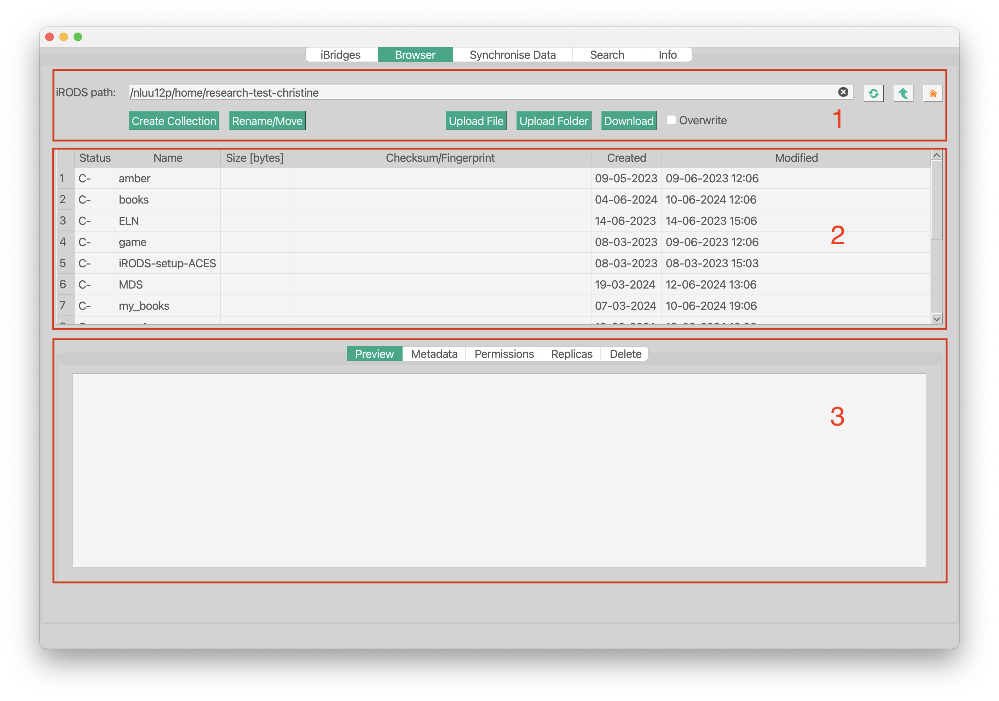
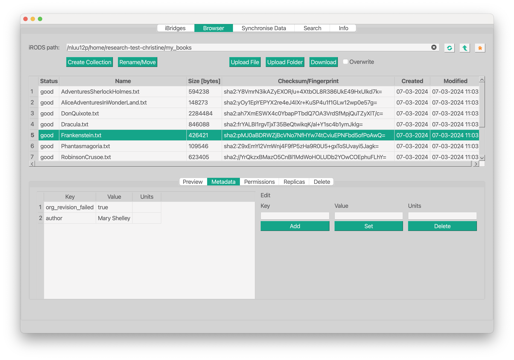
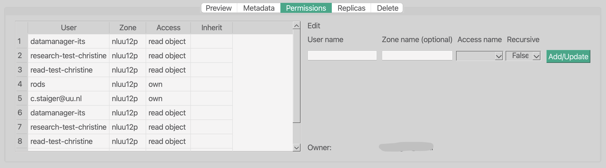
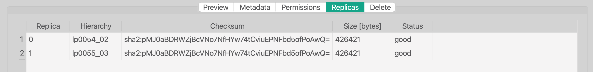
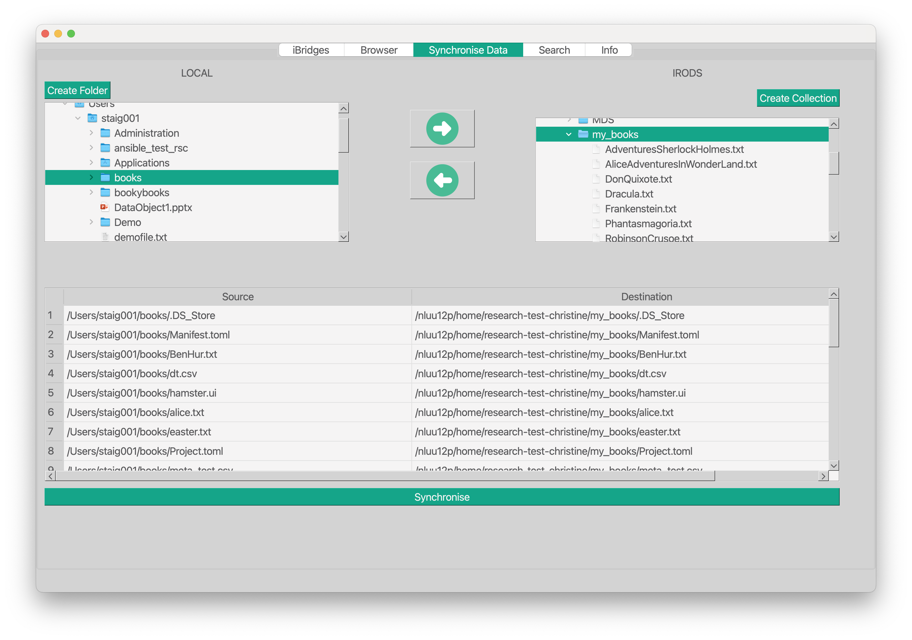
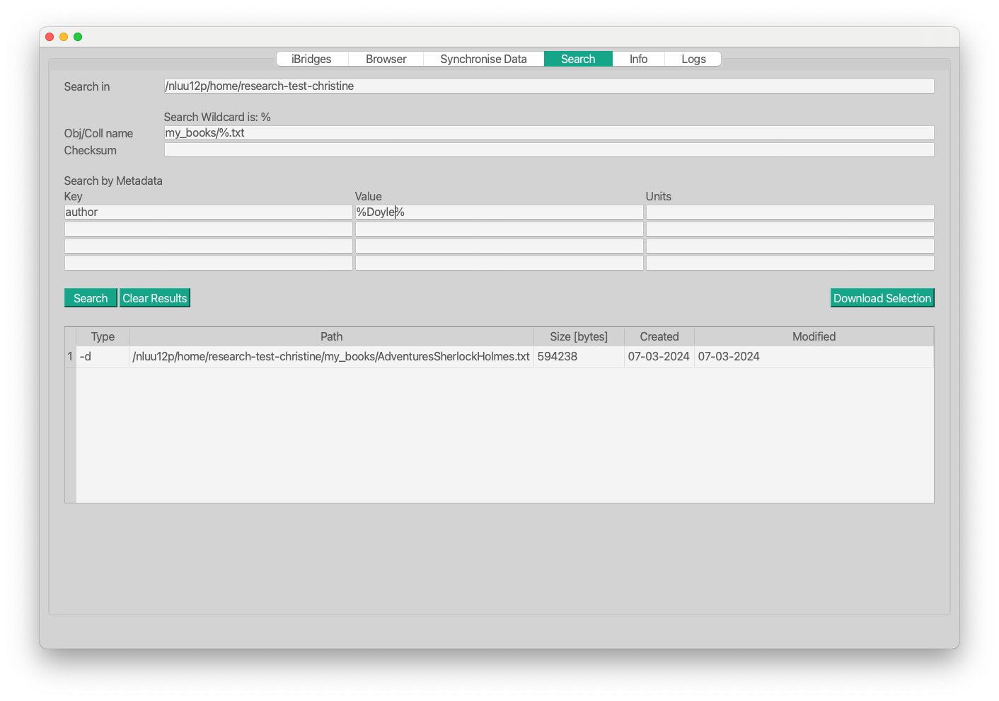
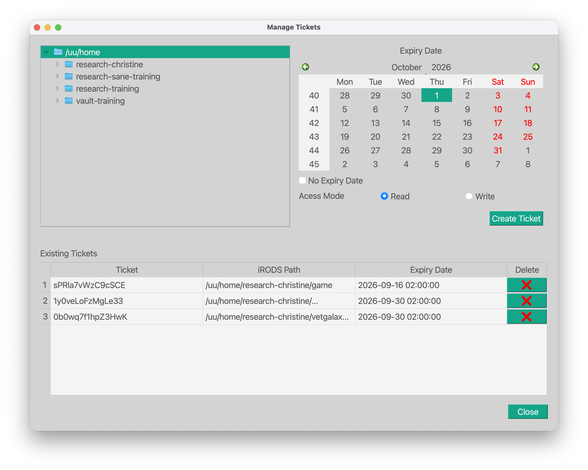
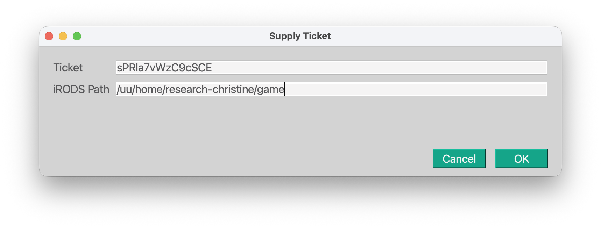

User Documentation
Synopsis
iBridges‑GUI is a graphical interface for any iRODS‑based data management platform.
It exposes core iRODS functionality through a set of focused views, each designed for a specific task.
Default views:
Browser— explore collections, inspect data objects, edit metadata and permissions, upload/download, delete.Data Synchronisation— synchronise local directories with iRODS collections.Search— locate collections and data objects using name or metadata filters.Info— display user information, groups, and server resources (status, capacity).
Views and Plugins
The Views and Plugins menu (next to Configure) lets you show or hide tabs.
Checked views are restored automatically when you restart the application.
On first launch, the following tabs appear:
Welcome, Browser, Synchronise Data, Search, Info, and Logs.
Browser
After logging in, the Browser is the first view you see.
It consists of three parts:
- Navigation
- Listing
- Detailed inspection

Listing
The table lists all collections and data objects at the current path.
Columns:
- Status —
-Cfor collections; replica status for data objects.
If a data object’s status is notgood, the data is compromised. Contact your iRODS administrator. - Name
- Size
- Checksum
- Created / Modified
Actions:
- Single click — load details below.
- Double click — open a collection.
Inspect collections and data objects
This section shows detailed information about the selected item.
Preview
Displays collection contents or the first lines of text/JSON/CSV files.
Metadata
Shows metadata as key–value–unit triples.
- Single click loads an entry into the editable fields.
- Add — create a new entry.
- Update — modify the selected entry.
- Delete — remove the entry matching the fields.

Permissions
Shows access rights for the selected item.

- The Access name dropdown lists available rights.
- Creator shows who created the item.
- Collections support
inherit/noinherit.
inheritapplies collection permissions to newly added items. - Enable Recursive to apply changes to all existing members.
Replicas
Shows the storage resources where a data object is stored.
Collections do not have replicas.

If a replica status is not good, contact your iRODS administrator.
Data Synchronisation
Synchronise Data lets you synchronise a local directory with an iRODS collection.
- Local → iRODS (right arrow)
- iRODS → Local (left arrow)
Before synchronising, differences are calculated and shown in the text field.
This may take some time for large directories.

Synchronisation works only for directories/collections, not individual files.
Search
The Search view allows you to filter by path, name, and metadata.

Search fields
Path— defines where the search is performed.
Must exist; defaults to your home collection.Obj/Coll name— filter by name.
Example:demofinds all items named demo.Wildcards use
%.
Example:my_books/%.txtfinds all.txtfiles inmy_books.Metadata filters — narrow results further.
Example: keyauthor, value%Doyle%.
Search results
- Single click or Select all → click Download to choose a destination.
- Double click → open the item in the
Browserfor inspection.
Data Sharing with iRODS tickets
What are iRODS tickets
An iRODS ticket is a short string, for example kpIwGA1UZN0LFnM, that gives access to one collection or data object without changing any permissions and without the need for an account. Anyone who has the ticket string and the path it belongs to can read the shared data.
- A ticket is either a read ticket or a write ticket. A write ticket also allows uploads and changes.
- A ticket can have an expiry date. After that date it no longer gives access to the data.
- Tickets are stored on the iRODS server and belong to the user who created them. The owner can delete a ticket at any time, which revokes the access.
Typical uses are sharing a dataset with external collaborators, publishing data for download through an anonymous account, and giving temporary access.
Always share the ticket string together with the iRODS path it was made for.
Create tickets

Open the ticket manager from the menu bar Data Access. The view has two parts: the iRODS tree and next to it the ticket settings to choose from, and below the table with your existing tickets.
To create a ticket:
- Select the collection or data object you want to share in the iRODS tree.
- Choose the access mode, read or write.
- Choose when the ticket expires. Pick a date in the calendar, or check the box to create a ticket that does not expire. The calendar is disabled while the box is checked.
- Click Create ticket. The new ticket appears in the table.
- Send the ticket string and the path to the person you want to share with.
The table lists all your tickets:
- Ticket — the ticket string to share.
- iRODS path — the shared collection or data object. Hover over the path to see it in full.
- Expires — the expiry date, or
never. - ❌ — delete the ticket and revoke the access.
Good to know:
- A ticket stops working at the start of the selected day. If it should still work during the whole day, select the following day.
- Share write tickets with care, since they allow changes to the shared collection.
- Delete tickets that are no longer needed. Do not rely on the expiry date alone.
Use tickets
You can use tickets as user of the system or as anonymous user.

Supply a ticket
To use a ticket, open the Supply Ticket dialog and fill in:
- Ticket — the ticket string you received.
- iRODS path — the path of the collection or data object the ticket was made for.
Click OK. If the ticket and the path match, the dialog closes and the shared location becomes your current location in the Browser. You can then browse, view metadata and download data. With a write ticket you can also upload.
As a user of the system
If you already have an account, log in as usual and supply the ticket. The ticket gives you access to the shared data on top of your own permissions.
As an anonymous user
Collaborators without an account use the anonymous user of the iRODS server. Create an iRODS environment file for it with the environment editor (Configure). The user name is anonymous and works without providing a password. Your iRODS administrator can provide you with the correct irods environment settings.
Once you log in with this environment you can supply the ticket as described above. Without a ticket, an anonymous user cannot see any data.
Things to keep in mind
A ticket lasts as long as your session. If you log out or restart the application, supply the ticket again.
Use one ticket per session. To switch to another ticket, log in again first.
A ticket on a data object only gives access to that object, not to the other items in its collection. The Browser opens the parent collection, where the listing may be empty. Type the full path of the object in the path field of the Browser to reach it.
Expired tickets are still accepted by the dialog, and the shared path may still be visible, but downloading data fails with
CAT_TICKET_EXPIRED. Ask the owner for a new ticket.Deleted tickets: if the owner deletes the ticket while you are using it, further actions fail with
CAT_TICKET_INVALID.
The same functionality is available from the command line and in Python. See the Working with Tickets tutorial in the iBridges documentation.